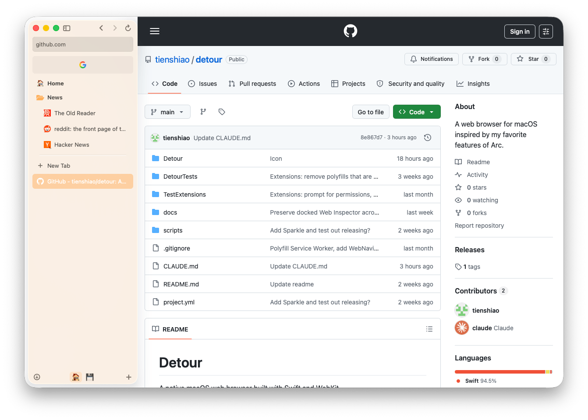

FOR ARC REFUGEES
Take a Detour.
The browser for curious people. Explore the web without losing your place.

¶ A NOTE FROM THE MAKER
“All of MY favorite features from Arc. And maybe some of yours too.”
SPACES
Workspaces, the way you actually work.
Group tabs into Spaces — each with its own emoji, color, and pinned set. Switch with a swipe. One window, one Space at a time, exactly the way your brain already sorts the day.
- 🍊
- 🌿
- 📚
- 🎨
PINNED TABS & FOLDERS
Stuff you always have open.
Pin the tabs you live in. Group them in folders. They reset to home when you close them — never gone, never cluttered.

- 🏠 Home
- 📂 News
- The Old Reader
- reddit: the front page of the internet
- Hacker News
PROFILES
Work you, personal you, side-project you.
Profiles own the cookies, the history, the extensions. Sign into the same site three times — three Profiles, three sessions, no logging out. Spaces live inside Profiles; share one across many Spaces, or keep each Space sealed off.
- P
- W ACTIVE
- X
And also, in no particular order
(17 more)01Liquid Glass Native
Real macOS chrome — translucent surfaces, real materials, real vibrancy. Not a web app pretending.
02Real Dark Mode
Sidebar, and chrome all respect your system appearance. Switch at sundown like the rest of your apps. (Yes, all of it. The whole sidebar.)
03Command Palette
⌘T to open, ⌘L to navigate. Searches open tabs, history, and the web in one input.
04Peek Preview
Shift-click any link to peek it in an overlay. Expand to a real tab if it's worth it.
05Tab Archiving
Inactive tabs quietly archive themselves. Your sidebar stays a sidebar, not a graveyard.
06Content Blocker
Built-in. EasyList rules. Per-site allowlist. No third-party extension required.
07Multi-Window
Each window remembers its own active space. WebView ownership transfers on focus.
08Private Browsing
A throwaway Space pinned to a non-persistent Profile. Closes, forgets, gone.
09Session Restore
Tabs come back with scroll position and form state via WebKit interaction state.
10Find in Page
⌘F with match counts and prev/next. Like it should be.
11Downloads
Built-in manager. Progress, cancel, reveal in Finder. Survives a relaunch.
12Audio Controls
Tabs that make noise get a mute button. The noisy ones get found.
13Sidebar Auto-Hide
⌘S to toggle. Auto-hide pops back on edge hover.
14Auto-Updates
Sparkle does the boring part. New version, no new website visit.
15Web Inspector
⌘⌥I. The full WebKit one. It's just there.
16Web Extensions (WIP)
CRX install, popups, native messaging. Some work, some don't.
17Drag Handles
Grab the sidebar or the top of the window — even on a webpage — to move it around. No title bar required.